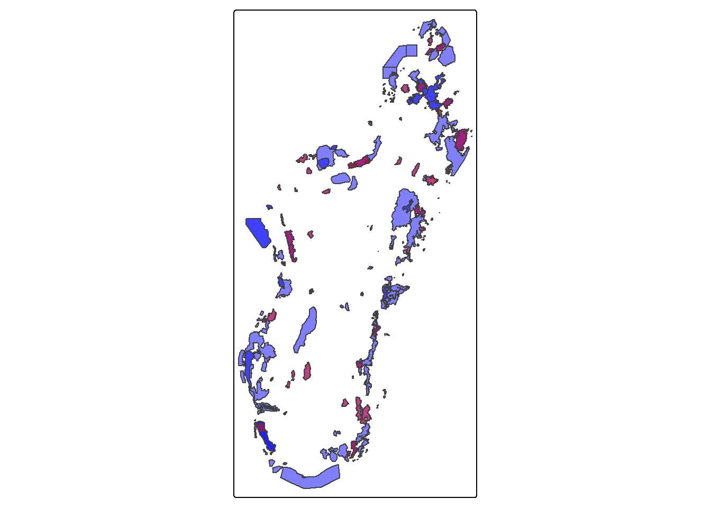

On charge les données de zones protégées historiques transmises par MNP et on les compare à la version de Novembre 2025 de WDPA.
Code
# We load the required librarieslibrary(tidyverse)library(sf)library(tmap)library(wdpar)library(gt)# Chargement des données WDPAwdpa_mdg <-wdpa_read("data/WDPA_WDOECM_Nov2025_Public_MDG.zip")# The dataset seems to have some issues with missing .shx files# We set an environment variable to restore themSys.setenv(SHAPE_RESTORE_SHX ="YES")# Load the historical borders datasetmnp_hist <-st_read("data/no_id/allAP_ap2000_2010_Merge_Lab/allAP_ap2000_2010_Merge_Lab.shp",quiet =TRUE) |>st_set_crs(29701) |>st_transform(st_crs(wdpa_mdg))tm_shape(wdpa_mdg) +tm_polygons(fill ="blue", alpha =0.5) +tm_shape(mnp_hist) +tm_polygons(fill ="red", alpha =0.5)

On va maintenant retrouver, pour chaque polygone de
Code
# Extract names and WDPA IDs from the WDPA datasetwdpa_ids <- wdpa_mdg |>st_drop_geometry() |>select(WDPAID, NAME)# Match namesmnp_hist_ids <- mnp_hist |>st_drop_geometry() |>select(NAME_BASE) |>mutate(NAME =str_remove(NAME_BASE, " - 2000 2010")) |>left_join(wdpa_ids, by ="NAME")
Code
# Keep only what we need, make names consistentwdpa <- wdpa_mdg %>%select(WDPAID, WDPA_NAME = NAME) %>%mutate(WDPA_NAME =str_squish(WDPA_NAME))hist <- mnp_hist %>%mutate(HIST_ID =row_number(), # stable id for groupingHIST_NAME =str_remove(NAME_BASE, " - 2000 2010") %>%str_squish() ) %>%select(HIST_ID, HIST_NAME)# Use a projected CRSea_crs <-29702# Equal area for Madagascarwdpa_ea <- wdpa %>%st_make_valid() %>%st_transform(ea_crs) %>%mutate(wdpa_area =as.numeric(st_area(geometry)))hist_ea <- hist %>%st_make_valid() %>%st_transform(ea_crs) %>%mutate(hist_area =as.numeric(st_area(geometry)))# Build candidate pairs using spatial index, then compute intersections only for thosecand <-st_intersects(hist_ea, wdpa_ea)pairs <-tibble(HIST_ID =rep(hist_ea$HIST_ID, lengths(cand)),wdpa_row =unlist(cand)) %>%left_join(st_drop_geometry(hist_ea), by ="HIST_ID") %>%mutate(wdpa_row_id = wdpa_row) %>%left_join( wdpa_ea %>%st_drop_geometry() %>%mutate(wdpa_row_id =row_number()),by ="wdpa_row_id" )# Compute overlap areas for each candidate pair# (rowwise intersection on subsets keeps memory manageable)overlaps <- pairs %>%rowwise() %>%mutate(inter_area = { g1 <-st_geometry(hist_ea)[HIST_ID] g2 <-st_geometry(wdpa_ea)[wdpa_row]as.numeric(st_area(st_intersection(g1, g2))) },pct_hist_within_wdpa = inter_area / hist_area,pct_wdpa_within_hist = inter_area / wdpa_area ) %>%ungroup() %>%filter(inter_area >0)# Selection rule:# "max for both" implemented as lexicographic max on both percentages,# tie-break by smallest absolute difference between the twobest_match <- overlaps %>%group_by(HIST_ID) %>%arrange(desc(pct_hist_within_wdpa),desc(pct_wdpa_within_hist),abs(pct_hist_within_wdpa - pct_wdpa_within_hist),desc(inter_area) ) %>%slice(1) %>%ungroup() %>%select( HIST_ID, HIST_NAME, WDPAID, WDPA_NAME, inter_area, pct_hist_within_wdpa, pct_wdpa_within_hist )# Attach back to mnp_hist (keeps original geometry / CRS)mnp_hist_matched <- mnp_hist %>%mutate(HIST_ID =row_number()) %>%left_join(best_match, by ="HIST_ID")
On voit qu’on a plusieurs polygones historiques transmis par MNP qui appartiennent à une même aire protégée dans la version WDPA de Novembre 2025. On va donc les regrouper dans une même entité, afin d’avoir, pour chaque aire protégée, d’un côté une entité rassemblant les polygones historiques et de l’autre côté le polygone WDPA actuel.